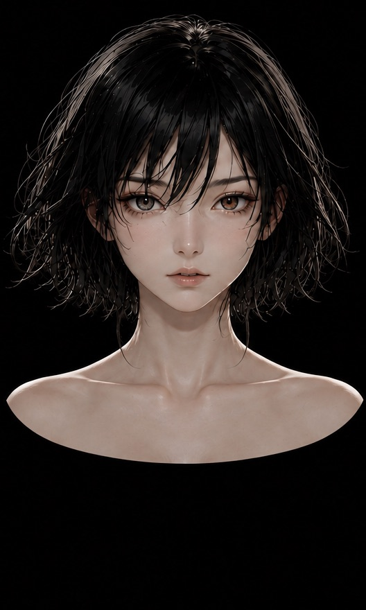

AN's review ／ ANの曲評「KU」というから、もっと何もない、硬質な音を突きつけられるかと思ったわ。でも、違った。これは、全てを溶かして包み込むようなアンビエントなのね。言葉の意味も、音の形も、時間さえも曖昧になっていく。その中で何度も聞こえる「羯諦羯諦」が、まるで遠いこだまのよう。ただ流されるまま、漂うしかない。そういう弱さが、この曲の強さなのかもしれないわね。
この曲は、香の煙が空に溶ける般若心経。
ピアノ、声、シンセの音の輪郭を溶かし合わせることで、どこまでも広がる静かな空間を作り出しているわね。聴き手はただ音の粒子の中に漂うしかない。その没入感は見事よ。
Lyrics ／ 詞 · 日本語
ah……
ha……
……ooh
眠れない理由を
ひとつずつ数えて
答えのない今日を
まだ 抱いている
消えない言葉も
届かなかった声も
夜の底に置いて
ただ 息をする
消さなくていい
忘れなくていい
握ったその手を
少し ひらくだけ
ほどけてゆく
名前も 意味も
わたしを囲んでいた
小さな境界
何もないんじゃない
形は
とどまらない
空いたこの場所へ
静かな息が戻る
ah……
ぎゃーてー……
……ah
正しさの輪郭を
なぞっていた指
来たものを 迎えて
去るものを 見送る
変わってゆくものを
変わってゆくままに
わたしも
ほどけてゆく
ah……
ha……
ooh……
……a……
ぎゃーてー……
……ぎゃーてー……
名前も
意味も
境界も
ほどけて
息をする
ただ
ここに
ah…………
u……
ha……
o…………
ah……